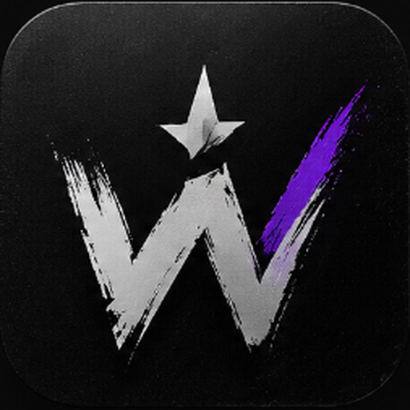
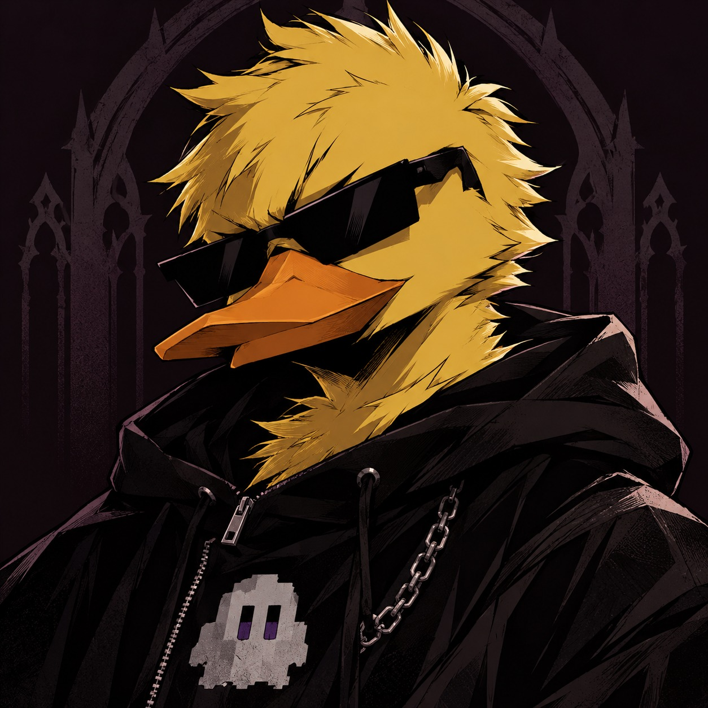

Chat en tiempo real
Esperando mensajes...

Eventos reales y pruebas TBT separados. La conexión depende del conector TikTok activo.
Conecta tu cuenta para empezar.
servicio local local requiere la app de Windows con el LIVE conectado y la Event API activada. El socket local abierto se distingue de recibir eventos reales.
Las simulaciones no incrementan estadísticas reales. Se envían al motor de reglas para probar alertas.
Ajustes independientes por overlay. La vista previa no modifica tu fuente OBS hasta guardar.
Críticos (León / Galaxia) · Medios (follow / regalo) · Estándar (comentarios / likes). Una pista de audio global para evitar solapamientos.
Espectro real del audio de la fuente OBS. El sintetizador local de Windows no informa niveles.
Las reproducciones se confirman al terminar en la fuente de OBS.
La latencia es aproximada y depende de los timestamps del proveedor. Sin eventos remotos no existe una medición válida.
Un único espacio para supervisar tu transmisión, automatizaciones y las fuentes de OBS.
Rendimiento y precisión para tus directos. Tus overlays, puntos, sonidos, controles LIVE y automatizaciones sin distracciones.
La simulación no actúa sobre OBS ni el temporizador persistente.
Prueba tus reglas y los filtros con datos aislados. Los puntos, estadísticas del LIVE y Spotify permanecen intactos.
Elige un evento para probarlo.
Abre la vista de prueba del overlay para ver el resultado. El sonido y TTS se escuchan en esta PC.
Decide dónde aparecen el chat, los regalos, las alertas y las respuestas a comandos. Los sonidos solos se reproducen en tu PC.
Personaliza cada fuente sin cambiar las demás. El enlace OBS se actualiza al guardar.
Elige quién recibe puntos. Todos acredita desde la primera interacción; Comunidad con requisitos conserva el filtro de seguimiento y participación.
Esperando eventos reales…
Desconectado
Desconectado
Sin conectar
Al conectar OBS, WITI BOT recarga las fuentes propias automáticamente; también puedes forzarlo aquí.
Sin sesión de identidad
Este inicio oficial confirma identidad y perfil. No concede por sí mismo permisos para enviar chat LIVE.
Tus espectadores escriben /play la chona en el chat. El costo se descuenta una sola vez; si Spotify rechaza la petición, se devuelve. Spotify debe estar conectado y tener un dispositivo activo con permisos de reproducción.
Los permisos se aplican antes del cobro. Las respuestas aparecen en el panel y en la fuente de acciones de OBS.
Esperando un comando del chat…
MrBeast Rizz y tu colección incluidos desde el primer inicio. Escucha un audio y pulsa Usar en regla.
Busca un regalo de TikTok, selecciónalo y crea una alerta, una meta o un contador en segundos.
Selecciona uno para configurar tu alerta.
WitiVoces requiere un proveedor online operativo. Si falla, no se usará la voz de Windows sin tu elección. Comprueba la disponibilidad con «Escuchar voz».
Exporta la base de datos. Los recursos multimedia permanecen en la carpeta de datos de la aplicación y deben copiarse por separado.
Comprobando versión…
Una visión que toma forma en cada directo. Conoce a quien creó el proyecto y a quien ayuda a ponerlo a prueba.

Una idea propia. Un espacio para que cada comunidad haga suyo el directo.
Witi es el creador y dueño de WITI BOT. Su interés por Minecraft, los mecanismos y la creación de contenido se convierte aquí en herramientas para conectar con su comunidad: sonidos, comandos, música e interacciones que hacen que cada espectador forme parte de lo que pasa en pantalla.
Define la identidad y el rumbo del proyecto con una intención clara: construir una experiencia que se sienta propia, que dé espacio a las ideas de los creadores y que siga creciendo con las necesidades de cada directo.
Una mirada más para mejorar cada versión.
Felipino-FLD participa como beta tester de WITI BOT. Su papel es probar las versiones, explorar sus funciones y señalar errores o detalles que puedan dificultar la experiencia de uso.
Sus observaciones ayudan a revisar el comportamiento de la aplicación y a detectar oportunidades de mejora. Una colaboración que acompaña el desarrollo y aporta otra perspectiva antes de llevar las novedades a los directos.
Creado por Witi. Puesto a prueba con Felipino-FLD. Construido para la comunidad.
Hay una actualización disponible para WITI BOT.
↑ ↓ para elegir · Intro para abrir · Esc para cerrar